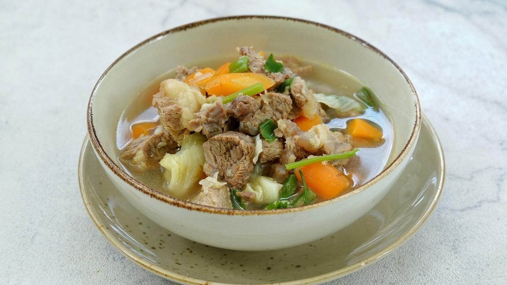

Sop Daging
Sop saudara merupakan masakan khas dari suku makassar sulawesi selatan ( Kabupaten Pangkajene dan Kepulauan) berupa hidangan berkuah
Bahan-bahan:
- 250 Gram Daging
- 1 Liter air
- 1 buah wortel
- 1 buah kentang
- 2 sdm margarin
- 1/4 buah Bawang Bombay Iris
- 2 siung bawang putih geprek
- 2 buah cengkeh
- 2 buah kapulaga
- 1 batang kayumanis
- sejumput pala bubuk
Bumbu Seasoning:
- 1/2 sdt Garam
- 1/2 sdt gula (boleh skip, sesuai selera)
- 1 sdt kaldu bubuk
- 1/4 sdt merica bubuk
- 1 batang daun bawang iris tipis
- 1 sdm bawang goreng
- 1 batang seledri iris tipis
- 1/2 buah Tomat
Cara Memasak:
- Potong2 daging kecil2. lalu Rebus daging hingga lembut.
- Panaskan Margarin. tumis bumbu sampai wangi dan layu. Masukkan bumbu tumis ke dalam rebusan daging.
- Masukkan kentang wortel yang sudah dipotong2. masak sampai matang. tambahkan garam, gula, merica bubuk dan kaldu bubuk.
- Test rasa. hidangkan dengan menambahkan taburan irisan daun bawang, daun seledri, tomat dan bawang goreng